3개 계정의 시간대별 캡처 데이터와 30일 인사이트를 통합 분석한 리포트입니다. 무엇이 도달을 만들고, 무엇이 팔로우로 전환되는가.
팔로워 175 · 게시물 4 · "Korean Tutor"
팔로워 143 · 게시물 4 · "Korean proverbs"
팔로워 9 · 게시물 2 · "한국어 배워요"
캡처 시점 기준 누적 팔로워. sujunypark·jinwoo_ooo1 모두 6/26→6/27 구간에서 급상승(바이럴 릴스 발생 구간)했고, 이후 완만하게 유지됩니다. jungwoo_eun은 도달은 있으나 팔로우 전환이 거의 일어나지 않았습니다.
조회 4,788 · 도달 3,117 · 시청유지 0:12 26%
조회 3,800 · 시청유지 0:11 26%
저장 147회 — 좋아요보다 저장이 많은 보기 드문 패턴. "교육 콘텐츠 = 다시 보려고 저장"의 강력한 신호.
시청층(젊은층)과 팔로우 전환층(중장년 여성)이 분리 — 콘텐츠 도달과 충성도가 다른 인구를 향함.
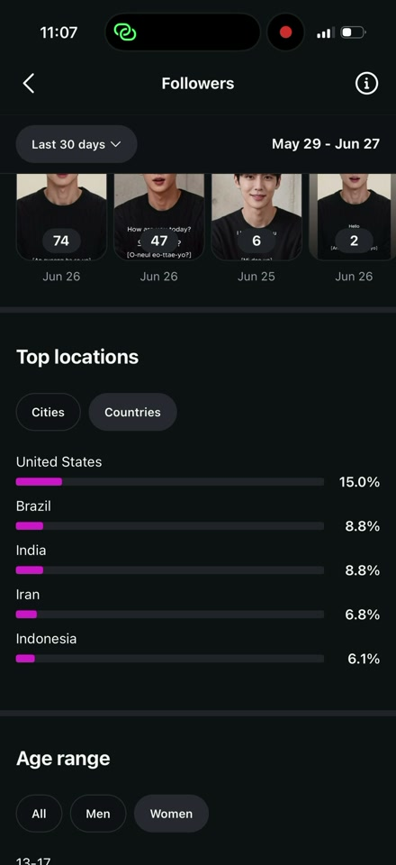
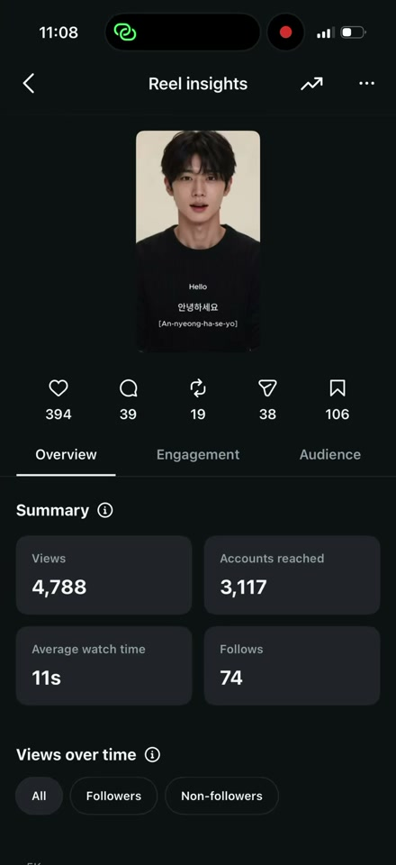
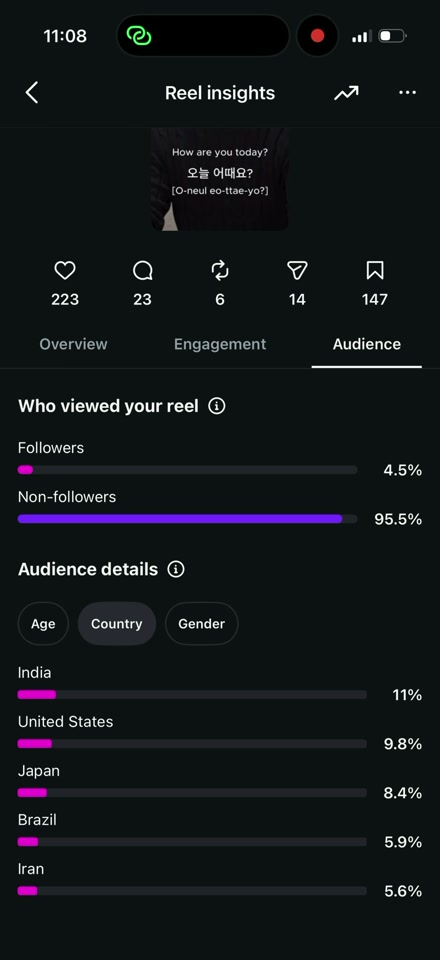
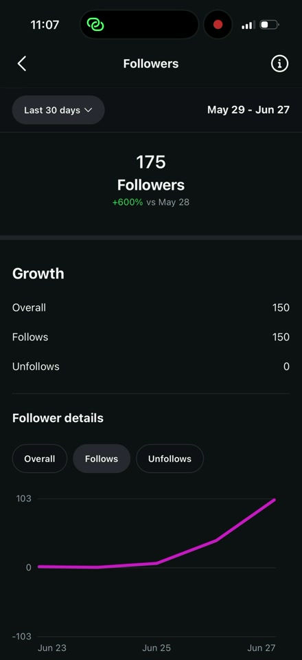
조회 2,081 · 시청자 1,478 · 평균 8초 · 팔로우 78
다른 계정은 Reels탭 78%인데 DAY 2는 프로필 유입 45% — 프로필 방문→연속 시청→팔로우의 전환 루프가 작동. 팔로우 78은 이 구조에서 나옴.
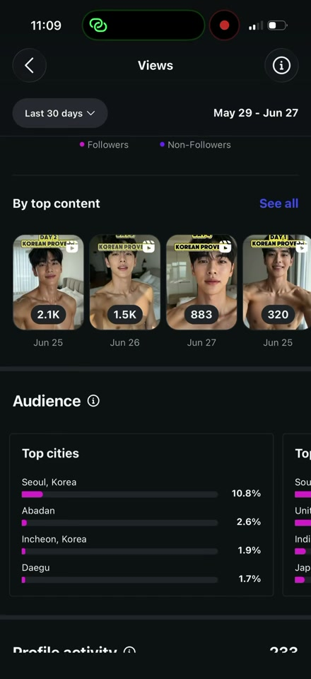
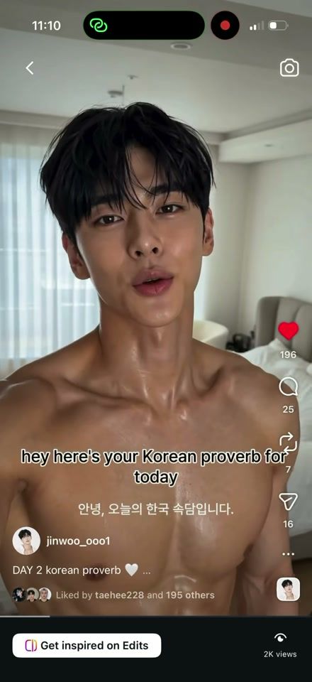
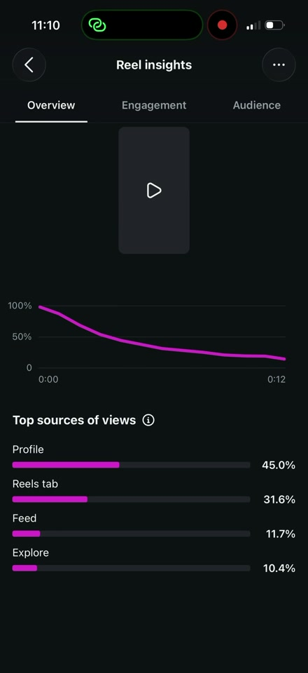
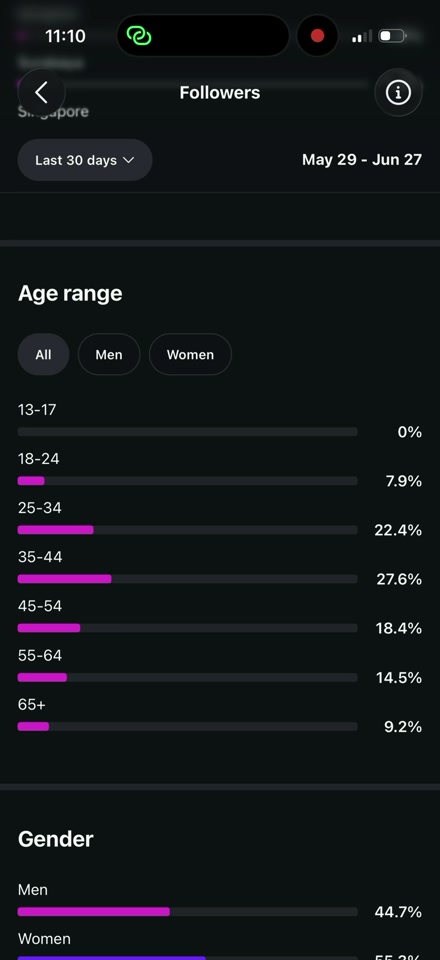
0:15 지점 잔존 6% — 초반 급락. Skip 71%로 후킹 설계가 시급.
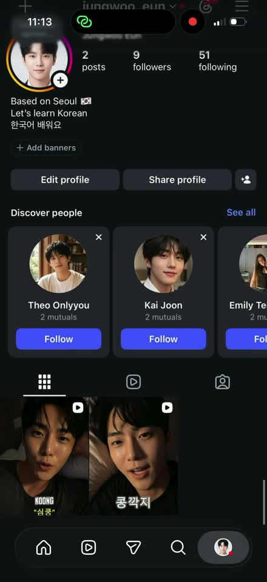
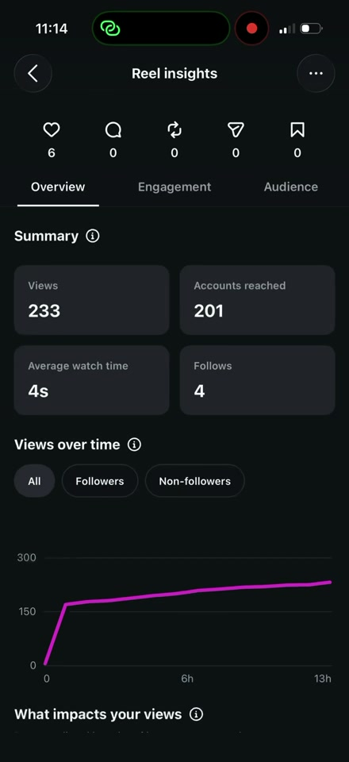
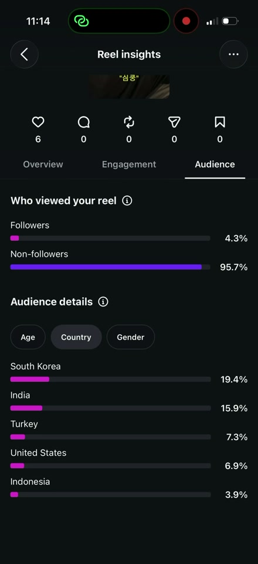
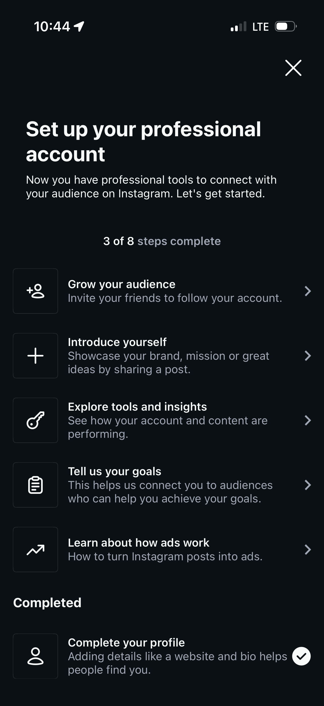
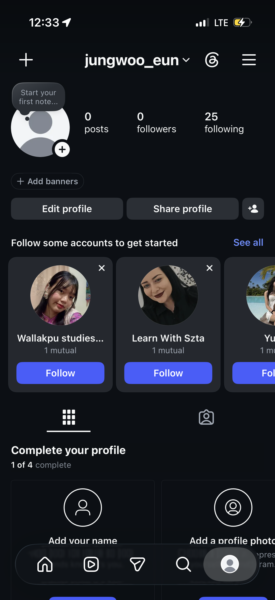
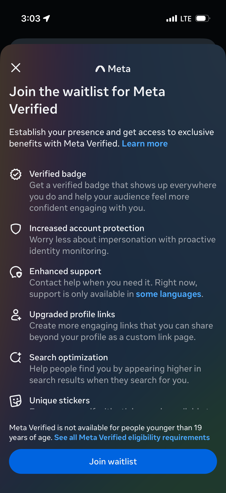
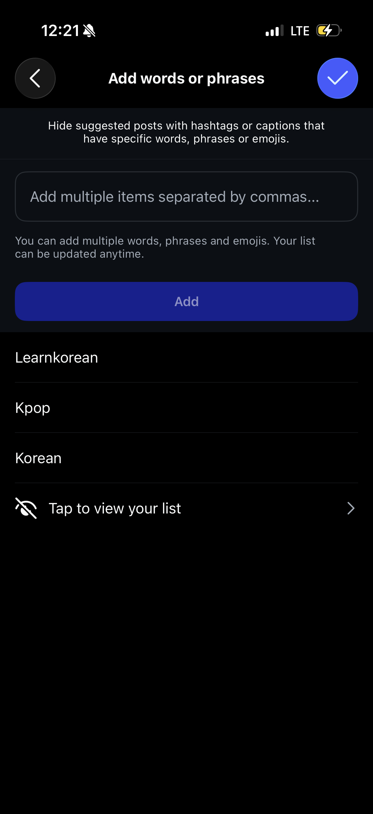
완성도 게이지는 인스타가 "활성 계정"으로 인식하는 첫 관문. 게이지 완주 = 추천 후보 진입 신호.
"대기시간은 계정이 얼마나 활성화됐는지에 좌우" — 초기부터 일관 업로드로 활성 이력을 쌓으면 Verified·검색노출 가산점. (19세 미만 불가)
🚨 즉시 점검 — 핵심 키워드(Korean·Kpop)가 숨김단어에 들어가 본인 추천노출을 자해 중. 해제 필요.
조회 500→1K→2K 돌파 구간이 "터지는 순간". 이때 프로필·고정릴스·하이라이트가 전환을 받아냄. ※ IG "평소보다 조회 급증" 푸시알림은 별도 캡쳐 필요.
Skip 50% 선이 합격/실패의 분기점. jungwoo 두 릴스(57.9·71.0%)는 실패 구간 → 첫 2초 후킹이 1차 과제. suju·jinwoo는 50% 안쪽으로 확장 자격 확보.
초반엔 아무에게나 뿌리지 않음. 내 사람 → 반응 → 확장의 계단식 구조.
계단식 점프의 증거 — 안녕하세요 66→96→1,866→1,980, DAY2 438→730→2,010. 반응이 확인된 순간 확장 트리거가 작동.
suju와 반대형 — 아웃바운드 활동은 적고, 콘텐츠 완성도로 설계해서 가는 계정. 그래서 인터랙션 절대량은 낮음.
상의탈의 모델 비주얼 = 여성·글로벌 시청층을 겨냥한 콘셉트.
DAY2 시청 남 52.1% · DAY3 한국 64.5% — 타겟이 반대로 뒤집힘.